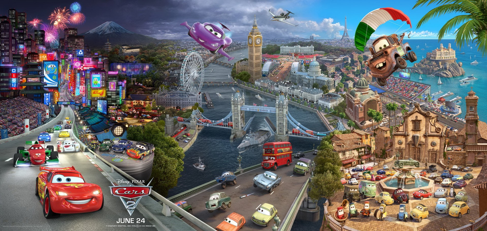

Synopsis
Dans ce deuxième volet, l'action quitte Radiator Springs pour une aventure internationale d'espionnage et de course automobile. Martin, le meilleur ami de Flash McQueen, se retrouve accidentellement mêlé à une mission d'espionnage internationale lorsqu'il est confondu avec un agent secret américain.
Flash McQueen participe au Grand Prix Mondial, une course prestigieuse qui se déroule dans trois pays différents : le Japon, l'Italie et l'Angleterre. Pendant ce temps, Martin travaille avec Finn McMissile et Holley Shiftwell, deux agents britanniques, pour déjouer un complot impliquant des voitures criminelles qui veulent saboter la course.
Le film explore les thèmes de l'amitié, de l'acceptation de soi et de la loyauté. Martin prouve que même une simple dépanneuse peut accomplir de grandes choses et qu'il n'a pas besoin de changer qui il est pour être extraordinaire. Ce volet se distingue par son ton plus action et son approche de film d'espionnage.
Personnages principaux
Martin
La dépanneuse devient le héros principal et agent secret malgré lui dans cette aventure internationale.
Flash McQueen
Participe au Grand Prix Mondial tout en soutenant son meilleur ami dans ses aventures d'espionnage.
Finn McMissile
Agent secret britannique expérimenté, expert en espionnage et mentor de Martin.
Holley Shiftwell
Jeune agent britannique qui s'associe à Martin et développe des sentiments pour lui.
Francesco Bernoulli
Coureur italien arrogant et rival de Flash McQueen dans le Grand Prix Mondial.
Professor Z
Villain principal du film, un scientifique criminel qui orchestre le complot.
Tour du monde
Cars 2 emmène les spectateurs dans un tour du monde spectaculaire avec des décors magnifiquement animés de différentes villes internationales :
🇯🇵 Tokyo, Japon
🇮🇹 Porto Corsa, Italie
🇬🇧 Londres, Angleterre
🇫🇷 Paris, France
Réception et héritage
Cars 2 a rapporté plus de 560 millions de dollars au box-office mondial, devenant un succès commercial. Cependant, le film a reçu des critiques plus mitigées que son prédécesseur, certains estimant que le changement de ton vers le film d'action et d'espionnage s'éloignait trop de l'esprit du premier film.
Malgré les critiques, Cars 2 reste apprécié par de nombreux fans pour ses scènes d'action spectaculaires, son humour et son animation impressionnante des différentes villes du monde. Le film a également continué à générer d'importantes ventes de produits dérivés.
La bande originale, composée par Michael Giacchino, incorpore des éléments musicaux de films d'espionnage classiques tout en maintenant l'esprit de la franchise Cars.